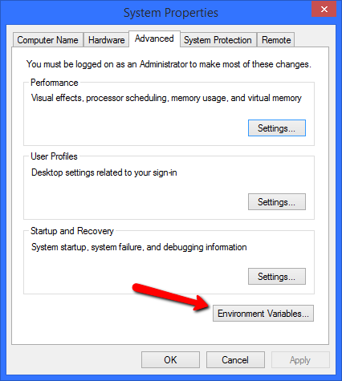
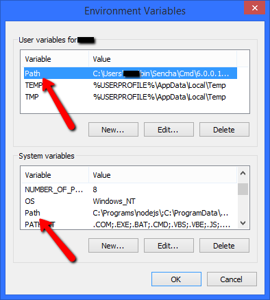

本向导用于帮助开发人员使用 Sencha Cmd 来将 Ext JS 5.x 或 Sencha Touch 2.4.x 迁移至 Ext JS 6.0.x .即使在这个版本中有很多重要的变化,我们试着让这个升级过程尽可能的无痛苦.在我们开始前,值得提出的是这个向导做了一些假设条件.
- 你的应用是使用 Ext JS 5.x 或者 Sencha Touch 2.4.x版本来构建的
- 你的应用使用的是我们推荐的 MVC 模式来设计的
- 你的应用目前是用Sencha Cmd来构建的
我们意识到不是所有的客户都有这个条件运行在最新的框架和最新的Sencha Cmd. 在企业里由于时间限制,工作期限和支持许可等原因会决定使用什么版本.如果你的应用是基于一个较老的 Sencha 框架,你可以翻阅与那些版本相关的升级向导作为一个起始点来获得更进一步的信息. 例如, Sencha Cmd 5 升级向导.
Installer 变化
在 Sencha Cmd 6中, 我们介绍一个允许非 管理员/root 用户来安装这个应用的新的安装工具. 我们也包含了Sencha Cmd 需要的 JRE,这样你就不需要另外下载和安装了.如果你有一个上一版本发布的 Sencha Cmd 这里有几个在你升级过程中会遇到的问题.
Windows PATH
对于老版本的 Sencha Cmd Windows用户的环境变量 PATH 的修改的副作用是你会看到新版的“sencha” 没有在 PATH 的最前面. 这是正常的.你可以使用控制面板来管理你的PATH:

为修改用户或系统的 PATH 环境变量,在这个对话框中找到这个PATH的入口:

在最终的 PATH 环境变量里,系统的 PATH 字符串会在用户的 PATH 字符串前面出现.老版本的 Sencha Cmd 路径被安装到了系统 PATH 中,这样就会将新版本 "隐藏"起来..
Mac OS X / Linux
在非Windows平台上,安装工具现在只要添加一个位置到PATH中,这个可以通过修改 ~/.bash_profile 来完成:
export PATH=~/bin/Sencha/Cmd:$PATH在以前的安装工具安装后,你可能会找到象下面这样的多条记录:
export PATH=~/bin/Sencha/Cmd/5.1.1.39:$PATH
export PATH=~/bin/Sencha/Cmd/5.1.2.52:$PATH
export PATH=~/bin/Sencha/Cmd/5.1.3.61:$PATH新的安装工具现在维护一个连接 “~/bin/Sencha/Cmd/sencha” 这个连接指向最新安装的版本.
迁移过程
迁移前
从头再来
迁移过程的第一个步骤是确保你没有修改等待提交到你的源代码控制系统中.不建议在你还有变更待提交时就开始升级. 这个允许你更容易阅读 Sencha Cmd做的变更而确保你自己做的任何定制化开发还在.
安装合并工具(推荐)
在升级过程中, Sencha Cmd 可能需要应用一些你可能也改过的文件的变更.那么在这种情况下你修改了 Sencha Cmd需要更新的相同行,这会导致一个合并冲突.
好消息是,象版本控制,有一些工具可以解决这些合并冲突. Sencha Cmd 可以使用可视化合并工具,这个工具你可以通过命令行运行(几乎所有的).这个步骤可选,但是 为使升级处理起来更为简单,我们高度建议.
下面是一些非常流行的合并工具列表用于选择 (有些是免费的,有些是商业的):
- p4merge
- SourceGear
- kdiff3
- Syntevo SmartSynchronize 3
- TortoiseMerge - (part of TortoiseSVN)
- AraxisMerge
我们会在下一步中配置 Sencha Cmd 使用你建议的合并工具.
升级 Sencha Cmd
然后,你需要获取 Sencha Cmd 6 的最新版本. 你可以从 Sencha web site 上下载 Sencha Cmd 6.
安装Sencha Cmd 和重启你的终端. 如果你有一个老版本的 Sencha Cmd 你可能要修正你的 PATH (参见上面说明).
注意:如果你安装了以前版本的, 安装不会替换掉,但在运行 Cmd 软件时会优先使用新版. 参考上面的详细说明t
配置合并工具
如果你选择好了合并工具,我们需要配置 Sencha Cmd 使用它.你需要在配置文件中添加下面2个属性来完成:
cmd.merge.tool
cmd.merge.tool.args我们可以在 Sencha Cmd 的安装目录下的 "sencha.cfg" 文件中设置这2个属性.或者,这2个属性设置成版本无关的方式而应用在 Sencha Cmd的所有版本中.详细内容请看一下"sencha.cfg" 文件中的结尾部分.
应用升级
我们准备好了开始升级. 只要在你应用的根目录下运行下面这个命令来进行.:
sencha app upgrade path/to/ext6你应该可以看到为数不多的几行绿色字体的信息,来让你知道你的应用已经成功的升级了.
如果你是从 Ext JS 4.x 升级,你需要参考一下 Sencha Cmd 5 升级向导 中的 Microloader 和 Build Properties 章节 . 同样,如果你使用了 Cordova 或者 PhoneGap, 你也要看一下这些章节.
检查点
一旦应用升级完成,你也解决了可能会报出的合并冲突,现在是时候在源代码控制中来看一下这些差别了. 如果所有看起来都是好的,那就好好的提交变更,然后回到一个干净的环境中了.
清理和构建
下一步就是从应用的根目录下运行一个快速的构建:
sencha app build --clean development发现使用 --clean 开关会删除构建输出目录下的所有文件. 这会确保不会从上个版本的构建中留下什么东西从而更加安全,我们在进行进一步操作前要确保所有变更都已提交.
你可以还要做些什么才能让应用可以构建,尤其是你如果在使用 Sencha Touch. 如果那样,上面会显示构建错误. 当所有构建错误修改后,这个构建命令会成功地运行.
检查点
当所有构建错误都解决了,那就是时候来提交变更了. 整个 Cmd 的升级阶段就完成了. 由于框架升级可能会有更多的变更,但最好是开始于一个可以构建的应用.
Watch
通过使用 Sencha Fashion (我们新的主题编译器),为使用自动更新特性可能, 应用必须采用 app watch.
使用 watch, 你现在能在你自己的 web 服务器 localhost 或者是 http://localhost:1841 查看你的应用了,这个服务器是我们自动为你启动的.这个web服务器现在是 app watch 的默认部分. 在 Sencha Cmd 5 版本中, 你不得不另外运行 sencha web start 来使用 Sencha Cmd 的web 服务器. 你可以通过使用下面这些属性来调整 web 服务器(下面是它们的默认值):
build.web.port=1841
build.web.root=${workspace.dir}应用更新
当使用 Sencha Cmd 来生成一个Ext JS 6 的应用时,下面的命令会生成一个通用应用 (一个同时使用了classic和 modern 工具包的应用):
sencha -sdk path/to/ext6 generate app YourAppName ./AppFolder生成一个只用 classic 工具包的 Ext JS 6 的应用时, 加上 --classic:
sencha -sdk path/to/ext6 generate app --classic YourAppName ./AppFolder类似地,一个只为 modern 工具包的应用:
sencha -sdk path/to/ext6 generate app --modern YourAppName ./AppFolderapp.json
生成的 Ext JS 6 应用有一个更为完善的 app.json 文件. 标准的app.json文件中的特定片段可能需要加入到已经存在的应用的 app.json文件中去.
“sass” 对象
这个对象包含了控制样式编译的属性.下面的片段是在一个新生成的应用中会提供些什么.如果你的 app.json 没有一个 “sass” 对象你可以直接粘贴下面的配置.
/**
* Sass configuration properties.
*/
"sass": {
/**
* The root namespace to use when mapping *.scss files to classes in the
* sass/src and sass/var directories. For example, "App.view.Foo" would
* map to "sass/src/view/Foo.scss". If we changed this to "App.view" then
* it would map to "sass/src/Foo.scss". To style classes outside the app's
* root namespace, change this to "". Doing so would change the mapping of
* "App.view.Foo" to "sass/src/App/view/Foo.scss".
*/
"namespace": "App",
/**
* Comma-separated list of files or folders containing extra Sass. These
* files are automatically included in the Sass compilation. By default this
* is just "etc/all.scss" to allow import directives to control the order
* other files are included.
*
* All "etc" files are included at the top of the Sass compilation in their
* dependency order:
*
* +-------+---------+
* | | base |
* | theme +---------+
* | | derived |
* +-------+---------+
* | packages | (in package dependency order)
* +-----------------+
* | application |
* +-----------------+
*/
"etc": [
"sass/etc/all.scss",
"${toolkit.name}/sass/etc/all.scss"
],
/**
* Comma-separated list of folders containing Sass variable definitions
* files. These file can also define Sass mixins for use by components.
*
* All "var" files are included after "etc" files in the Sass compilation in
* dependency order:
*
* +-------+---------+
* | | base |
* | theme +---------+
* | | derived |
* +-------+---------+
* | packages | (in package dependency order)
* +-----------------+
* | application |
* +-----------------+
*
* The "sass/var/all.scss" file is always included at the start of the var
* block before any files associated with JavaScript classes.
*/
"var": [
"sass/var/all.scss",
"sass/var",
"${toolkit.name}/sass/var"
],
/**
* Comma-separated list of folders containing Sass rule files.
*
* All "src" files are included after "var" files in the Sass compilation in
* dependency order (the same order as "etc"):
*
* +-------+---------+
* | | base |
* | theme +---------+
* | | derived |
* +-------+---------+
* | packages | (in package dependency order)
* +-----------------+
* | application |
* +-----------------+
*/
"src": [
"sass/src",
"${toolkit.name}/sass/src"
],
/**
* File used to save sass variables edited via Sencha Inspector. This file
* content will override all other variables.
*/
// "save": "sass/save.scss"
},上面的属性将会替换掉添加到 ".sencha/app/sencha.cfg" 文件中的 “app.sass.*” 属性.
尽管 Fashion 不是一个真正的 Sass的实现,因为它有一个这些路径设置的历史我们在这里仍使用“sass”这一术语.
“css” 数组
以前,应用有如下这两种设置 (从 Ext JS 5 或 Sencha Con EA 版本):
{
"path": "bootstrap.css",
"bootstrap": true
},
{
"path": "${build.out.css.path}"
"bundle": true
}这个值必须替换成:,
{
"path": "${build.out.css.path}"
"bundle": true,
"exclude": ["fashion"]
}这个我们添加的 exclude 属性确保如果我们使用 Fashion时CSS文件被忽略, 这个会从.scss源文件编译为 CSS文件.
工作区更新
在 Sencha Cmd 6 中, 在工作区的根目录增加了一个 workspace.json 文件. 这个文件在需要时会被生成,它会在升级过程中要注意的事项带来些益处..
workspace.json
这个文件默认看起来有点象这样:
{
/**
* An array of the paths to all the applications present in
* this workspace
*/
"apps": [
"app1"
],
/**
* This is the folder for build outputs in the workspace.
*/
"build": {
"dir": "${workspace.dir}/build"
},
/**
* These configs determine where packages are generated and
* extracted to (when downloaded).
*/
"packages": {
/**
* This folder contains all local packages.
* If a comma-separated string is used as value the first
* path will be used as the path to generate new packages.
*/
"dir": "${workspace.dir}/packages/local,${workspace.dir}/packages",
/**
* This folder contains all extracted (remote) packages.
*/
"extract": "${workspace.dir}/packages/remote"
}
}这个 “apps” 数组包含了在这个工作区中 Sencha Cmd 应用的相对路径.这个列表由sencha generate app 维护,但删除或移动应用需要手工维护这个数组.以前生成的应用也需要手工加上去.这个数组目前不再是必须的但是在未来的工具中用于查看工作区的应用列表将会非常重要.
Sencha Space 更新
“Sencha Space” 已经更名为 “Sencha Web Application Manager”.如果你用 Sencha Cmd 集成了 Sencha Space , 你需要在 app.json 文件中将 “space” 对象改为 “manager”.